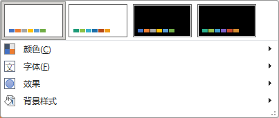
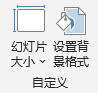
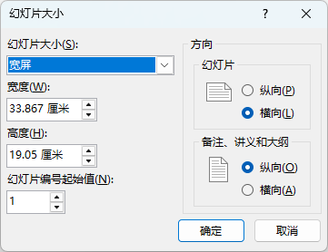
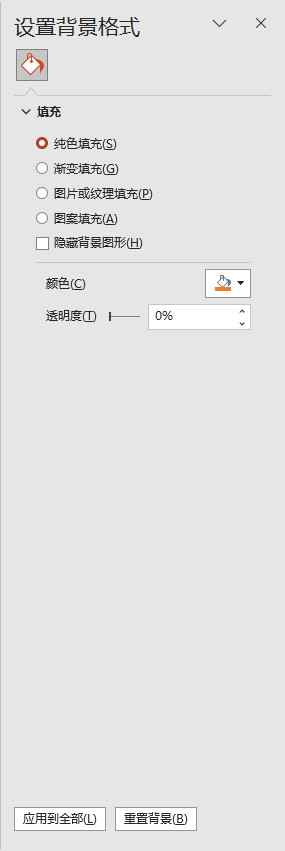

设计
Designer
- 创作PPT时 首先 要做的事情
- 统一为文档指定基调：主题、字体、颜色、背景等，避免经常性、重复性设置
- 创作过程可以随时实现"一键换肤"
- 所有的操作都是全局性的
- 主题 Themes
- 统一为文档设置主题
- 每个主题都有名字
- 鼠标放上去可以预览主题应用的效果，单击确认使用；预览的同时还会显示每个主题的名字，如 office 主题
- 等级考试的最爱
- 变体 Variants

变体
1. 颜色：提供不同的调色卡
2. 字体：应分别指定中文和西文的标题和正文字体
- 自定义 Customize
1. 幻灯片大小 Slide Size
- 标准 4:3
- 宽屏 16:9
- 自定义大小：正式场合多使用2倍屏、3倍屏甚至更多屏

自定义

自定义大小
2. 设置背景格式 Format Background

设置背景格式